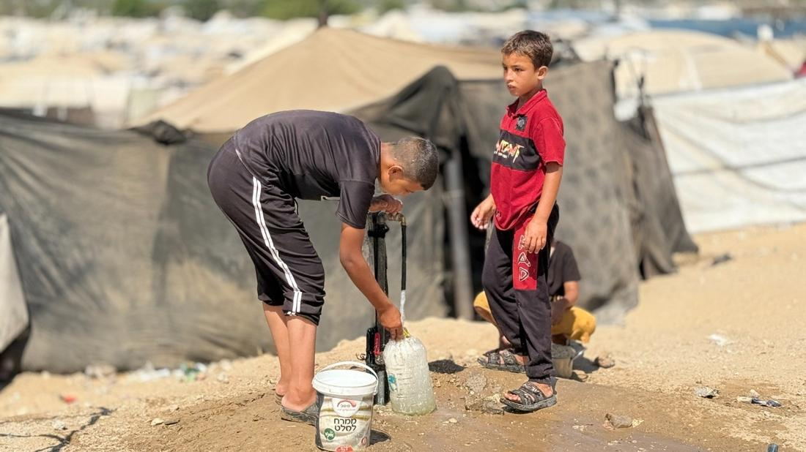
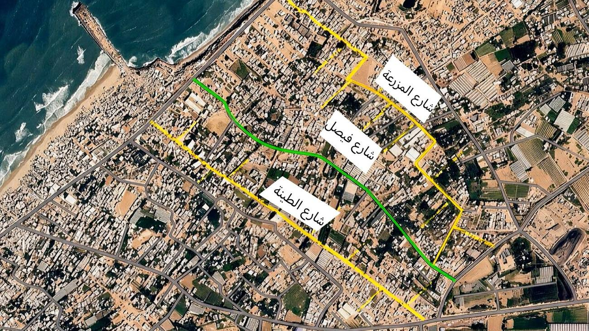
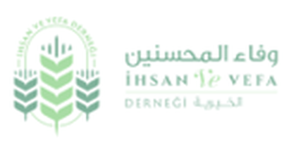
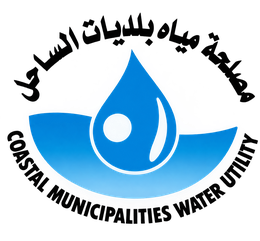

شبكة مياه بطول 4,825 متراً تصل إلى مواصي القرارة
مشروع تزويد المياه الطارئ للنازحين في محافظة شمال خان يونس القرارة، نُفّذ بين 17 يوليو و10 أغسطس 2026 بالتنسيق مع مصلحة مياه بلديات الساحل، وبتمويل مؤسسة وفاء المحسنين الخيرية.
- خط ناقل · 4 إنش770 مينقل المياه من المصدر
- توزيع رئيسي · 3 إنش1,700 ميغذّي المحاور الرئيسية
- توزيع فرعي · 2 إنش1,370 ميغذّي الأحياء والمخيمات
- توصيل · 1 إنش985 مالتوصيلات النهائية
أطوال الأنابيب في الرسم بمقياس واحد، وسماكة كل أنبوب تتناسب مع قطره. تنتهي الشبكة عند 20 نقطة توزيع.
تخدم الشبكة 8,952 أسرة في 53 مخيماً عبر 20 نقطة توزيع، وقد اكتملت كل الكميات المستهدفة.
ما نُفّذ

كان الوصول إلى المياه أصعب من أن يُترك لتوصيلات عشوائية
زاد الضغط على خدمات المياه والبنية التحتية في مواصي القرارة مع الظروف الإنسانية وازدياد أعداد النازحين. احتاجت المخيمات والتجمعات السكنية إلى شبكة تنقل المياه من مصدر التزويد إلى أقرب نقطة من الناس.
- خطوط رئيسية وفرعية تصل إلى المناطق ذات التزويد الضعيف
- ربط المناطق المستهدفة بمصدر تزويد مناسب
- تقليل الاعتماد على التوصيلات غير المنظمة
- بنية تحتية يمكن صيانتها وتوسعتها لاحقاً
كيف نُفّذ العمل، خطوة بعد خطوة
نُفّذت الأعمال ميدانياً وبالتدريج، من الخطوط الرئيسية إلى التفرعات الداخلية.
- 1
المسح الميداني
تقييم مسارات الشبكة والتجمعات المستهدفة، وتحديد نقاط الربط والمناطق ذات الأولوية والعوائق المحتملة.
- 2
التخطيط الفني
تقسيم الشبكة حسب القطر: خط ناقل، ثم توزيع رئيسي، ثم توزيع فرعي، ثم توصيلات نهائية.
- 3
تجهيز المسارات
تهيئة المسارات بما يناسب التربة والطرق والممرات والمناطق الرملية في المواصي.
- 4
تمديد الأنابيب
تمديد تدريجي يبدأ بالخطوط الرئيسية ثم الفرعية والتفرعات الداخلية.
- 5
تركيب الوصلات والملحقات
تركيب الوصلات والمحابس ونقاط التوزيع حسب الاحتياج الفعلي.
30 وصلة · 20 محبساً · 20 نقطة توزيع - 6
الاختبار والفحص
فحص سلامة الخطوط ونقاط الربط، وتجربة تشغيلية، ومعالجة أي تسريبات ظهرت.
- 7
بدء التشغيل
تشغيل الشبكة بالتنسيق مع مصلحة مياه بلديات الساحل وبدء الضخ إلى المناطق المستهدفة.
أين وصلت الأنابيب
شملت الأعمال شارع الطينة وشارع العبادلة وشارع فيصل، إضافة إلى المخيمات والتجمعات المجاورة عبر تفرعات وتوصيلات.
شارع الطينة 1,270 م
شارع العبادلة 1,000 م
شارع فيصل 200 م

من الميدان
اضغط على أي صورة لتكبيرها.
من نفّذ ومن موّل

مؤسسة وفاء المحسنين الخيرية

مصلحة مياه بلديات الساحل
ما بعد التسليم
لتبقى الشبكة تعمل، يوصي التقرير بآلية واضحة للمتابعة والصيانة.
صيانة دورية
فحص منتظم للخطوط الرئيسية والفرعية ونقاط التوصيل والمحابس ونقاط التوزيع ومناطق الربط.
صيانة طارئة
آلية للإبلاغ عن التسربات وانقطاع الخطوط وتلف الوصلات وأعطال المحابس وانخفاض الضغط وأي تعدٍّ على الشبكة.
توصيات التقرير
اعتماد خطة صيانة دورية
جدول صيانة دوري للخطوط الرئيسية والفرعية ونقاط التوزيع.
إنشاء سجل مركزي للشبكة
توثيق الخطوط والوصلات والمحابس ونقاط التوزيع مع مواقعها ومساراتها.
تحديث خريطة الشبكة
خريطة GIS أو مخطط هندسي يوضح خطوط 4 و3 و2 و1 إنش والمحابس ونقاط التوزيع والربط.
منع التوصيلات العشوائية
تنظيم أي توصيلات مستقبلية عبر الجهة المسؤولة عن الشبكة لمنع انخفاض الضغط وزيادة التسرب.
التوسع حسب الحاجة
إضافة تفرعات في المناطق التي تشهد توسعاً سكانياً أو مخيمات جديدة.
متابعة ضغط المياه
قياسات دورية للضغط في النقاط الرئيسية والأطراف للتأكد من كفاءة التوزيع.
تعزيز التنسيق التشغيلي
استمرار التنسيق مع محطة مياه الساحل بشأن جداول الضخ والاحتياجات الفنية.